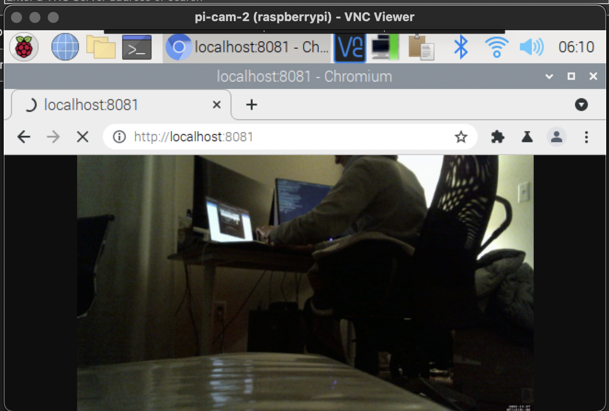
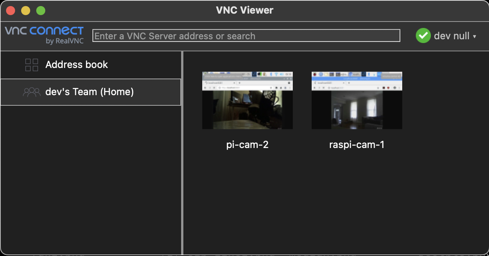

Introduction
This year I took a couple Raspberry Pis and usb webcams I had laying around and set up a DIY home security system using motion.
In this blog post, I’ll show how my setup lets me check a livestream of the cameras, save pictures when the camera detects movement, and creates off-site backups when new pictures are saved.
I’ll start by giving some background on the software I used, followed by a walkthrough of the steps I took to get it all running.

Motion
Motion is a program written in C that monitors the video signal from a connected camera device. When it detects motion, it records pictures and/or video and writes them to disk.
Motion detection works by comparing subsequent images from the camera device. It performs noise filtering, masking, despeckling, and labelling on images before counting the number of pixels which differ. When the count passes a threshold, the camera has detected motion and the program takes additional actions.
By default, it will start writing images to /var/lib/motion, and uses a configuration file in /etc/motion/motion.conf.
Motion has a number of shell hooks such as on_picture_save that let you add in additional functionality.
It also provides a streaming option which lets you view the live camera feed over the web, which I’ll cover below.
Live-Streaming Camera Feed
By default, the stream is only viewable on your local network. If you want to view it from the outside world, there’s a few ways to do so.
One option is to disable the default restriction stream only on localhost and configure your router to route external connections to the stream port. I was able to get this working, but I’m not confident enough in my security precautions to write about it. Luckily there’s a safer option that’s easier to set up. I’ll cover it in the next section.
VNC
Raspberry Pis have support for Virtual Network Computing (VNC), which allow remote GUI access to the device.
You can use VNC from outside your local network with a program named RealVNC. RealVNC is proprietary, but it’s free for non-commercial use, is easy to setup and use, and is recommended in Raspberry Pi’s official documentation.
It involves installing a server program on your Raspberry Pi and a client program on an external device. RealVNC manages an end-to-end encrypted cloud connection between the devices which takes care of a number of network security concerns for you.
To do this, I open realvnc-viewer on my travel computer, which presents a nice little web interface that I use to tunnel in to the GUI of one of my Raspberry Pis. From there I just open a web browser and navigate to the local IP address or hostname (determined from my router) and port of the motion web server (determined from the Motion configuration file).

Side Note: I haven’t explored free software alternatives to could be substituted for RealVNC, but if you know of any please let me know!
Installation
Here’s what I did on both my Raspberry Pis to get up and running. The following pertains to an installation and motion 4.3.2 on the bullseye release of Raspberry Pi OS.
Motion
First, I installed motion on my Pis with sudo apt install motion.
This is all that was needed to run motion from the command line. The default behavior is to record videos when motion is detected, but I wanted to save pictures instead, so I made a couple changes in /etc/motion/motion.conf:
@@ -110,7 +110,7 @@ post_capture 0
############################################################
# Output pictures when motion is detected
-picture_output off
+picture_output on
# File name(without extension) for pictures relative to target directory
picture_filename %Y%m%d%H%M%S-%q
@@ -120,7 +120,7 @@ picture_filename %Y%m%d%H%M%S-%q
############################################################
# Create movies of motion events.
-movie_output on
+movie_output off
# Maximum length of movie in seconds.
movie_max_time 60
@@ -155,7 +155,7 @@ webcontrol_parms 0
stream_port 8081
# Restrict stream connections to the localhost.
-stream_localhost on
+stream_localhost off
##############################################################
# Camera config files - One for each camera.
@@ -169,3 +169,4 @@ stream_localhost on
# Directory to read '.conf' files for cameras.
##############################################################
; camera_dir /usr/etc/motion/conf.d
+Tweaking Motion Sensitivity
The default settings are extremely sensitive to motion, so I dialed them back a bit.
@@ -72,7 +72,7 @@ text_right %Y-%m-%d\n%T-%q
emulate_motion off
# Threshold for number of changed pixels that triggers motion.
-threshold 1500
+threshold 3000
# Noise threshold for the motion detection.
; noise_level 32
@@ -81,7 +81,7 @@ threshold 1500
despeckle_filter EedDl
# Number of images that must contain motion to trigger an event.
-minimum_motion_frames 1
+minimum_motion_frames 5
# Gap in seconds of no motion detected that triggers the end of an event.
event_gap 60Running Motion as a Systemd Service
Distribution packages of motion for Raspberry OS, Debian, and Ubuntu include systemd services for running motion. However, the permissions for this won’t work out of the box.
As of writing, if you try to run systemctl start motion, you’ll get an error:
motion[3326]: [0:motion] [EMG] [ALL] motion_startup: Exit motion, cannot create log file /var/log/motion/motion.log: Permission deniedTo address this, I decided to have motion write logs and images to /home/pi/motion with permissions set to the motion user.
mkdir -p /home/pi/motion/pictures
sudo chown -R motion:motion /home/pi/motionThen I changed the config file to point to these locations.
@@ -22,13 +22,13 @@ setup_mode off
; pid_file value
# File to write logs messages into. If not defined stderr and syslog is used.
-log_file /var/log/motion/motion.log
+log_file /home/pi/motion/motion.log
# Level of log messages [1..9] (EMG, ALR, CRT, ERR, WRN, NTC, INF, DBG, ALL).
log_level 6
# Target directory for pictures, snapshots and movies
-target_dir /var/lib/motion
+target_dir /home/pi/motion/pictures
# Video device (e.g. /dev/video0) to be used for capturing.
videodevice /dev/video0Copying Images Offsite
To copy pictures off-site as they were written, I invoked shell hook on-picture-save to scp them to my VPS.
To demonstrate how this is done, here’s a script I saved to /home/pi/test.sh that copies every created image to /home/pi/test.
#!/bin/bash
# Get the filename of the saved picture from the first argument
filename=$1
# Copy the file to the specified directory
cp "$filename" /home/pi/test
# Alternatively you could scp to another device on your network, or to a VPS, or
# email the images to yourself, etcYou need to make these scripts executable, and if you want to use systemd, they need the right permissions:
sudo chmod u+x /home/pi/test.sh
sudo chown motion:motion /home/pi/test.shAnd here’s how you wire it up in the config file:
@@ -101,6 +101,7 @@ post_capture 0
# Command to be executed when an event ends.
; on_event_end value
+on_picture_save /home/pi/test.sh %f
# Command to be executed when a movie file is closed.
; on_movie_end valueRealVNC
To set up RealVNC server on my Raspberry Pis and the client on my external devices, I followed the following guide:
It’s very thorough and I had no issues, so I won’t re-hash what they wrote here.
When I needed to troubleshoot motion on the go, or if I wanted to glance at the camera livestream, I ran VNC viewer on a laptop and used a terminal and a web browser remotely from the GUI.
This isn’t an indulstrial grade home monitoring solution, but raspberry pis are handy in a pinch, and can serve nicely to let you know that your house hasn’t flooded or gotten trashed while you’re away.